Tsurui
Tsurui · Hokkaido
Tsurui
Highlighted on the Hokkaido map.
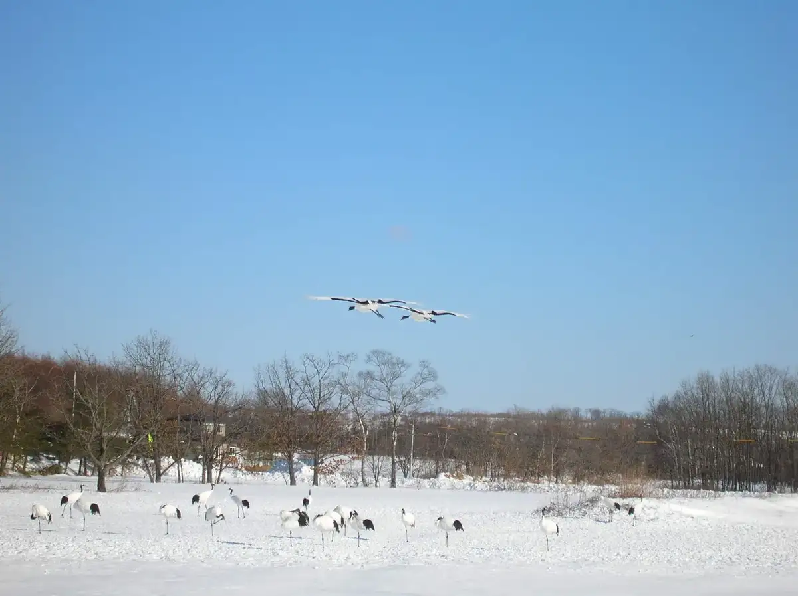
Stay
鶴居ノーザンビレッジ HOTEL TAITO
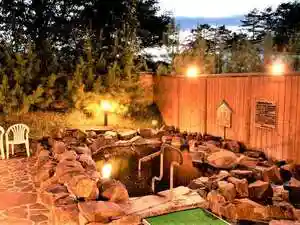
Tsurui Noozanbirejji Hotel Taito
つるいむら湿原温泉ホテル
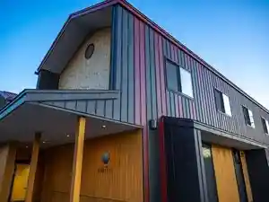
Tsuruimura Shitsugen Onsen Hoteru
ホテル グリーンパークつるい
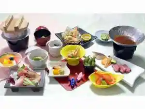
Hoteru Guriinpaaku Tsurui
つくしヴィレッジ
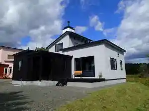
Tsukushi Virejji
ウッディホテルレストラン夢工房
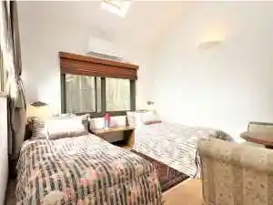
Uddeihoteruresutoran Yumekoubou
Dining
セイコーマート 鶴居店

Seikoomaato Tsurui Mise
Aコープ ほろろ店
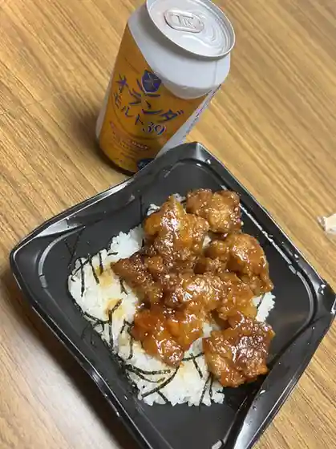
A Koopu Hororo Mise
レストラン フォレスト
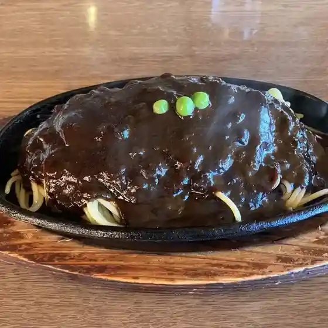
Resutoran Foresuto
バーベキューのまつい商店
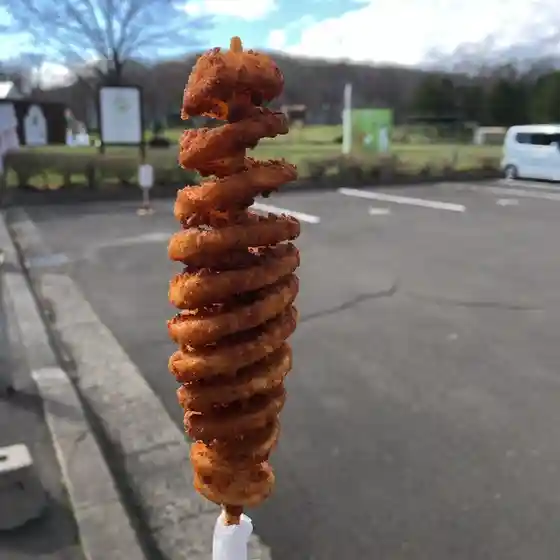
Baabekyuu Nomatsui Shouten
夢工房
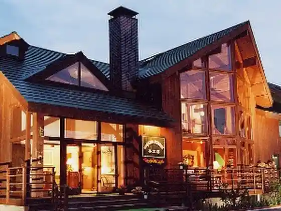
Yumekoubou
ヒッコリーウィンド

Hikkoriiuindo
のんき屋
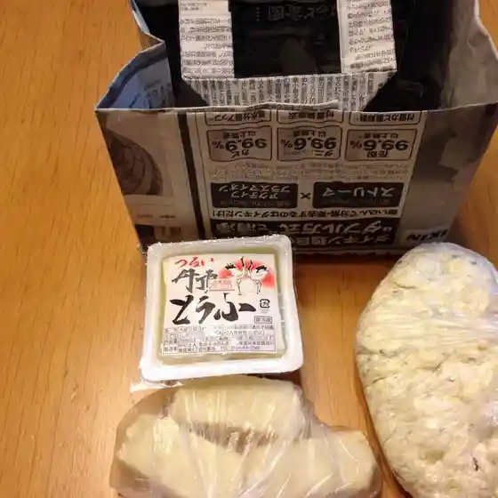
Nonki Ya
どれみふぁ空
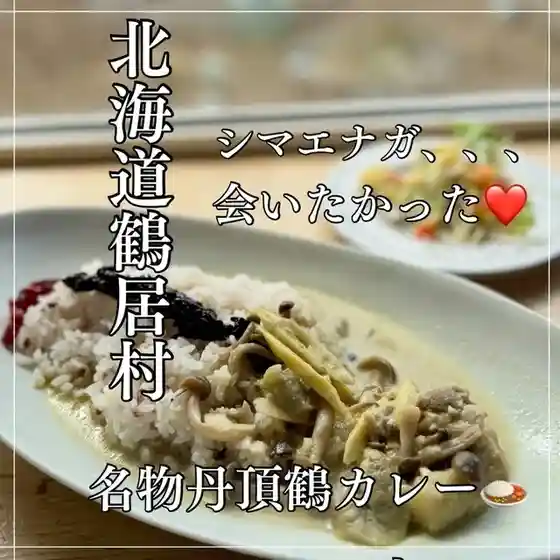
Doremifa Sora
ポム ド テール
Pomu Do Teeru
BAKERY CAFE SUN LIGHT FARM
Bakery Cafe Sun Light Farm
Brasserie Knot
Brasserie Knot
雪裡
Setsuri
KO-BO KUISHINBO Suzu
Ko-Bo Kuishinbo Suzu
ふく亭
Fuku Tei
食堂大和
Shokudou Yamato
鶴の里キャンプフィールド
Tsuru No Sato Kyanpufiirudo
ラーメン いがらし
Raamen Igarashi
鶴居ノーザンビレッジ ホテルTAITO
Tsurui Noozanbirejji Hoteru Taito
さるるん
Sarurun
ファームイントーチ
Faamuintoochi
鶴居たんちょうプラザ つるぼーの家
Tsurui Tanchou Puraza Tsuruboono Ie
カフェアンドレスト ハートン・ツリー
Kafeandoresuto Haaton Tsurii
グリーンパークつるい
Guriinpaaku Tsurui
鶴居どさんこ牧場
Tsurui Dosanko Bokujou